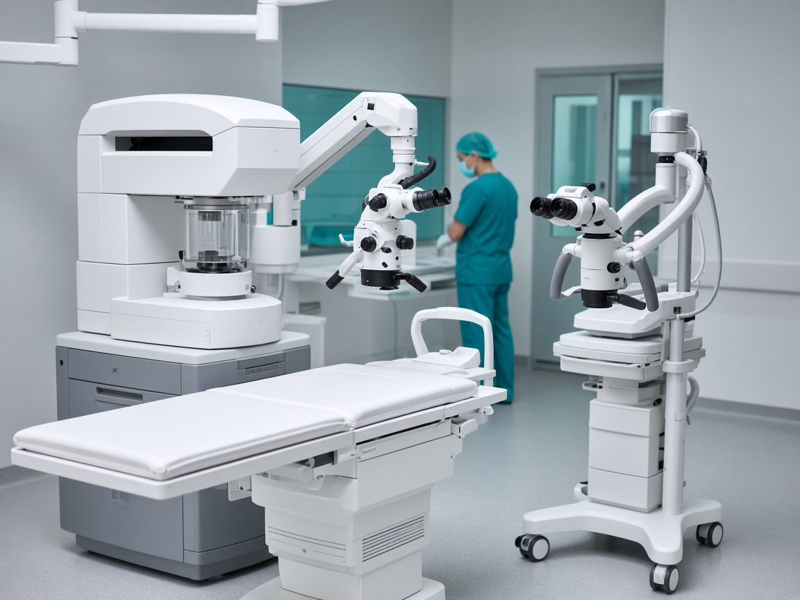
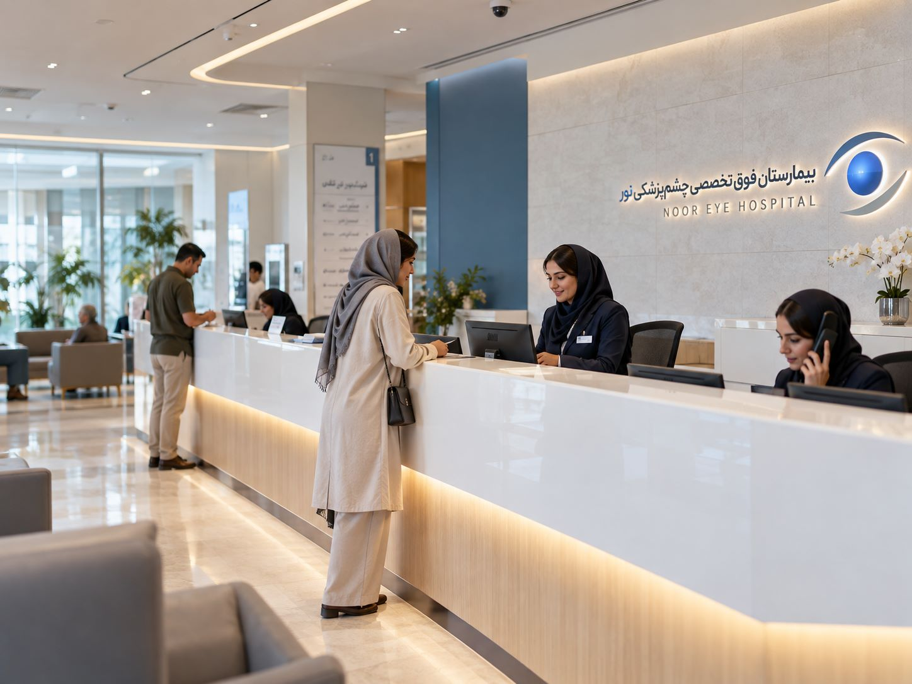
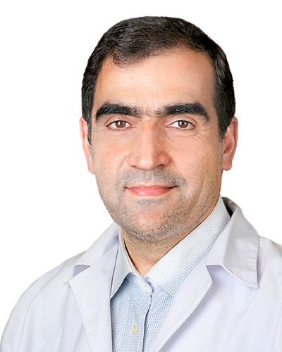
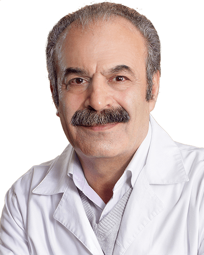
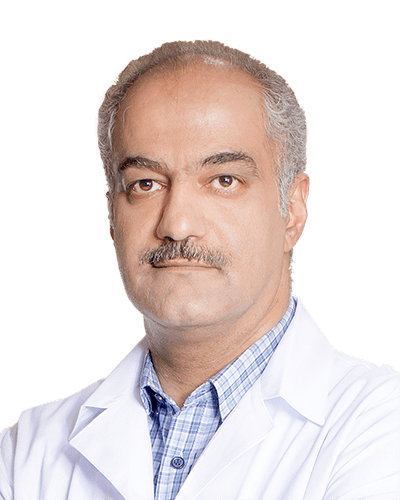
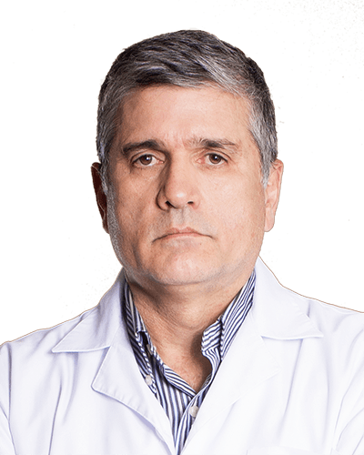

جزئیات و مراحل جراحی گلوکوم؛ آب سیاه چطور باعث از دست رفتن دید میشود؟
آب سیاه معمولاً بیعلامت پیش میرود. شناخت مراحل آن و زمان مناسب جراحی، تنها راه حفظ بینایی است.
بیمارستان فوق تخصصی چشمپزشکی نور
از نخستین عمل لیزیک کشور تا اسمایل پرو؛ تشخیص و درمان تخصصی بیماریهای چشم با تجهیزات روز دنیا.
بسیاری از روشهای امروزی جراحی چشم، نخستین بار در ایران در بیمارستان نور انجام شده است. این تجربه، پشتوانه هر تصمیم درمانی ماست.

انجام بیشترین اعمال جراحی اصلاح عیوب انکساری در ایران و خاورمیانه
اصلاح نزدیکبینی، دوربینی و آستیگمات با لیزر اکسایمر برای نخستین بار در ایران
اجرای نخستین جراحی اصلاح عیوب انکساری به روش لیزیک در کشور
انجام عملهای SMILE PRO و FEMTO LASIK برای اولین بار در کشور
نخستین عمل آب مروارید به روش فیکو، با قطره بیحسی و بدون بخیه
اولین عمل کاتاراکت با لیزرهای فمتوسکند و یاگ در ایران
انجام نخستین عمل جراحی برای کنترل بیماریهای قوز قرنیه
نخستین کاشت عنبیه مصنوعی و تغییر رنگ چشم در ایران
راهاندازی کاملترین و مجهزترین کلینیک Low Vision کشور
هر بیماری، تیم و تجهیزات ویژه خودش را دارد.
تشخیص زودهنگام و کراسلینکینگ قرنیه
ورودارزیابی لایه اشکی و درمانهای نوین
ورودراهکارهای جراحی و غیرجراحی برای دید نزدیک
ورودمشاوره و ارزیابی ایمنی پیش از عمل
ورودپیوند قرنیه و درمان بیماریهای سطح چشم
وروددرمان انحراف چشم در کودکان و بزرگسالان
ورودبیماریهای عصب بینایی و اختلالات میدان دید
وروددرمان تنبلی چشم و تقویت همکاری دو چشم
ورودتجویز و تطبیق انواع لنزهای تماسی طبی
ورودوسایل کمکبینایی و توانبخشی بینایی
ورود
بیماران بینالملل و CIP
بیماران خارج از کشور و متقاضیان خدمات CIP، مسیر پذیرش و درمان اختصاصی و هماهنگشده دارند.
جراحان فوق تخصص با سالها تجربه در درمان پیچیدهترین بیماریهای چشم.

بنیانگذار بیمارستان نور؛ پیوند قرنیه، قوز قرنیه و جراحی عیوب انکساری
مشاهده پروفایل
آب مروارید، اصلاح عیوب انکساری با لیزر اکسایمر و کاشت لنز داخل چشمی
مشاهده پروفایل
پیوند قرنیه، قوز قرنیه، فمتولیزیک، اسمایل و آب مروارید
مشاهده پروفایل
اسمایل، فمتولیزیک، پیآرکی و جراحی آب مروارید با لیزر فمتوثانیه
مشاهده پروفایلآنچه مراجعان درباره مسیر درمان خود در بیمارستان نور گفتهاند.
«از مشاوره تا روز عمل همهچیز دقیق و منظم بود. صبح روز بعد از اسمایل پرو، بدون عینک سر کار رفتم.»
«پدرم آب مروارید هر دو چشم را عمل کرد. توضیحات پزشک پیش از عمل، خیال همه ما را راحت کرد.»
«برای قوز قرنیه پسرم به چند مرکز رفته بودیم. اینجا مسیر درمان را روشن و قدمبهقدم توضیح دادند.»
«از مسقط برای عمل آمدم. هماهنگی اقامت و مترجم از قبل انجام شده بود و نگرانی نداشتم.»
مشاوره پیش از مراجعه
شماره خود را ثبت کنید؛ کارشناسان ما برای پاسخ و هماهنگی نوبت با شما تماس میگیرند.
سلام، من نورا هستم. میتوانم درباره خدمات، نوبتدهی و آمادگی پیش از عمل راهنماییتان کنم.